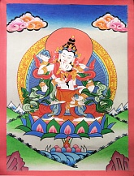

<p>
    Ваджрасаттва (санскр. Vajrasattva; тиб. Дордже Сэмпа). Иногда его называют шестым дхьяни-буддой. В &quot;Бардо Тёдол&quot; (тиб. &quot;Великое освобождение в бардо посредством слушания&quot;, &ldquo;Тибетская книга мертвых&rdquo;) будда Акшобхья называется Ваджрасаттвой.<br />
    В изображениях на тханках Ваджрасаттва имеет белый цвет тела, что обозначает его безупречную чистоту. Подобно Ваджрадаре, чьим проявлением он является, он держит ваджру символизирующую метод в своей правой руке и дильбу (колокольчик), символ мудрости в левой. Данный Ади Будда одет в красивые шелковые одежды и драгоценные украшения. Центральная фигура для практики тантры и медитаций. &nbsp; Практика Ваджрасаттвы - один из прямых тантрических методов очищения тела, речи, ума и деяний на пути к Просветлению.
</p>
